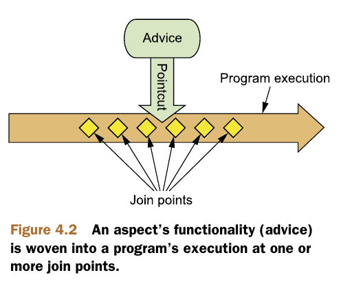
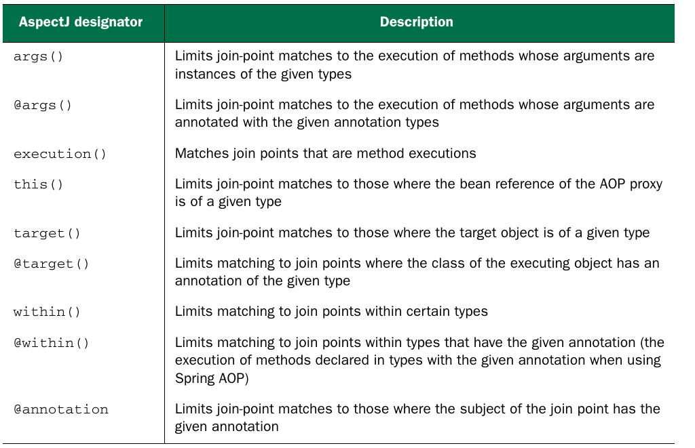
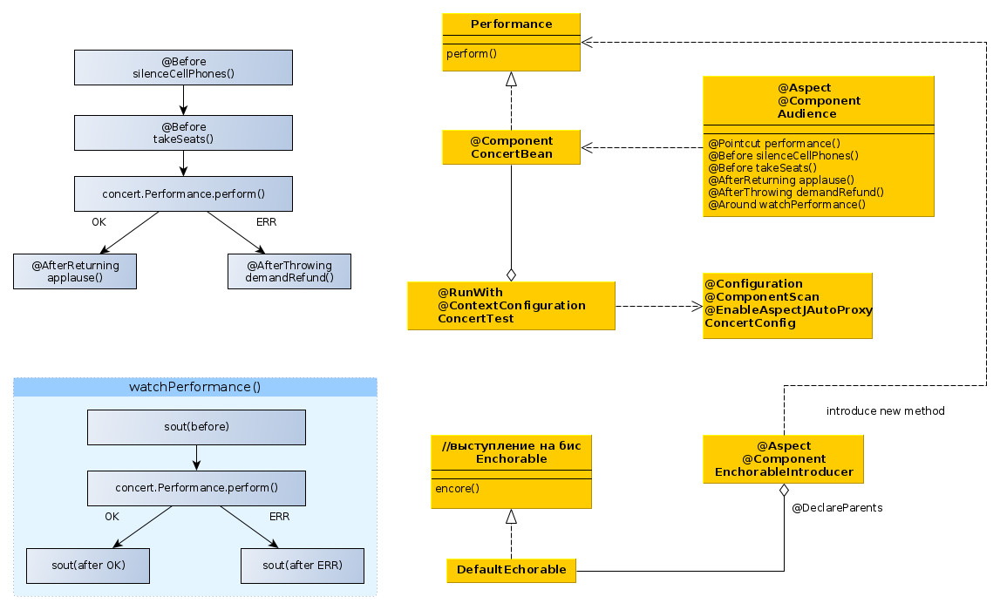
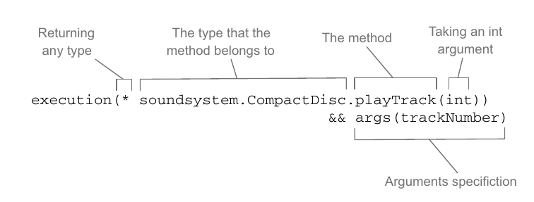
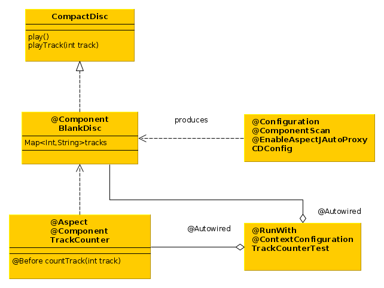

- cross-cutting concerns (сквозная функциональность) - это действия, выполняемые во многих местах системы для решения одних и тех же задачь (напр. логгирование, обработка исключений и пр).
- advice (совет) - какие действия нужно выполнить, когда их нужно выполнить (до вызова метода, после вызова метода, до и после, только если выброшено искл и пр.).
- join points - это все точки выполнения программы, где можно применить совет (вызов метода, изменение поля и т.п.).
- pointcuts - это набор join point в которых применяется данный совет.
- аспект = совет+pointcuts 
- introduction - это добавление новых методов и аттрибутов в существующие классы.
- weaving - это процесс применения аспектов к объектам, в spring создается новый прокси-объект, содержащий
аспект и собственно рабочий объект.

Pointcuts (выборки join points)

- П: выберем точку внедрения по:
- Полному имени класса (concert.Performance)
- Имени метода
- Возвращаемый тип - любой
- Тип аргументов - любой

- П: используя указатель within ограничим выборку точек
внедрения, будем перехватывать метод только если он вызывается из любого класса в пакете concert:

- В aspectJ выборках можно использовать булевые операторы:
&& and
|| or
! not
- Указатель bean позволяет опеределить аспект только при вызове метода бином с определенным id:
execution(* concert.Performance.perform())
and bean('woodstock')
Советы

- @EnableAspectJAutoProxy - это аннотация, включающая автопоиск аспектов, аналог в xml:
<aop:aspectj-autoproxy/>

- В советы можно передавать параметры: 

Добавление новых методов и свойств
- Spring AOP позволяет добавлять новые методы в существующие бины, при вызове дополнительного метода прокси-объект пробрасывает вызов на другой объект, т.о. получается, что один бин состоит из множества объектов.